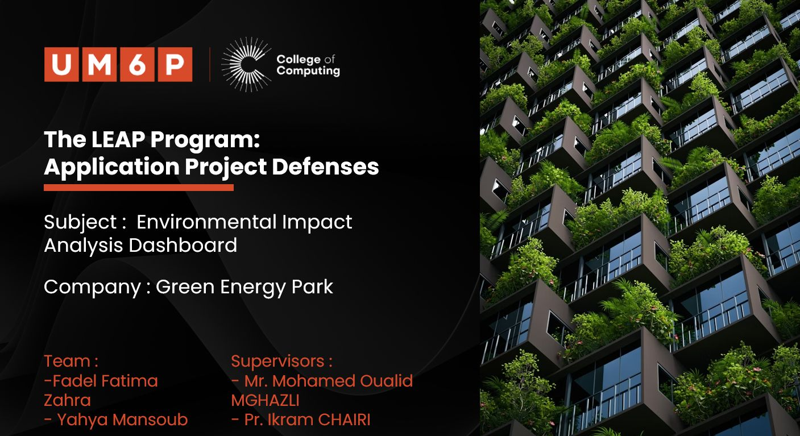
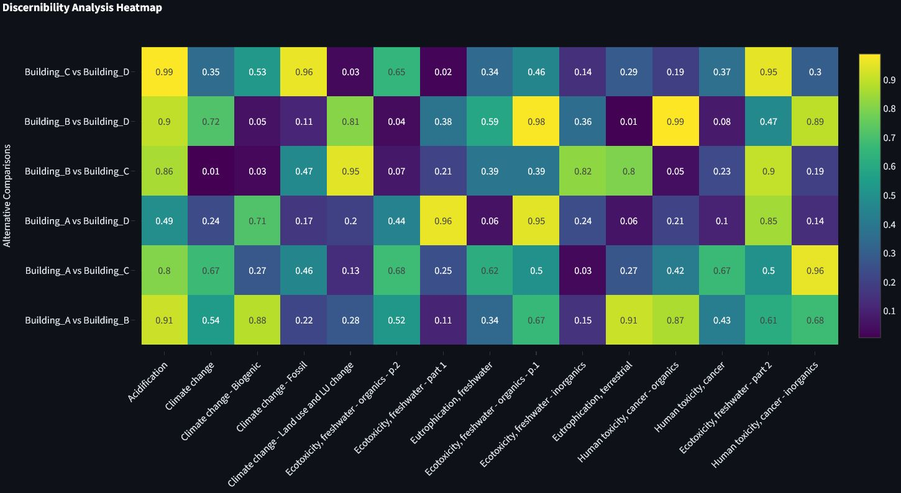
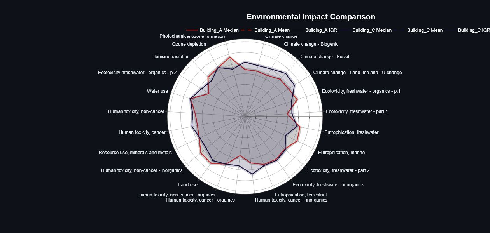

PROFESSIONAL EXPERIENCE
A comprehensive overview of my professional journey
Click any experience to view detailed information
During my internship at Green Energy Park, I worked on developing and optimizing AI models for anomaly detection in IoT sensor data. This project involved building a comprehensive end-to-end system to monitor and analyze real-time data from various sensors deployed across renewable energy installations.
Key Responsibilities:
• Researched and implemented autoencoder neural network architectures for unsupervised anomaly detection
• Designed and implemented the hardware architecture for IoT sensor integration and data collection
• Developed and optimized the complete data pipeline from hardware sensors to cloud infrastructure
• Engineered the full-stack solution including edge processing, data transmission protocols, and cloud-based storage
• Built a cloud-based monitoring dashboard for system administrators to visualize anomalies and system health in real-time
• Optimized the entire pipeline for performance and reliability at both hardware and cloud levels
• Collaborated with the engineering team to integrate the anomaly detection system into existing infrastructure
Technologies Used: Python, TensorFlow, Docker, Cloud Platforms, IoT Protocols, Real-time Data Processing
This experience strengthened my skills in machine learning, system architecture design, and working with large-scale IoT datasets in the context of sustainable energy systems.

Looking back at one of the most exciting parts of my first year at UM6P College of Computing, I recall our Application Project as part of the LEAP program, completed last June in collaboration with Green Energy Park.
Together with my teammate Fatima Zahra Fadel, we worked on QUACI-ACV (Quantification of Circularities in Life Cycle Assessment for Buildings). Our project focused on helping civil engineers compare the environmental impact of different building designs while considering the uncertainty in material and energy data — something often overlooked in traditional LCA methods.
We built a complete tool that brings together statistical analysis, simulation, and visualization to make these comparisons more reliable. It uses:
• Monte Carlo simulations to model uncertainty in building data
• Comparative analysis methods like discernibility analysis, ranking probabilities, and sensitivity analysis
• An interactive web interface built with Streamlit connected to a Flask backend for the heavy computations
• The system evaluates 27 environmental indicators across multiple impact categories to provide a more robust and data-driven comparison of building alternatives
Thinking back, the project really pushed us to apply statistical concepts to real environmental problems and to collaborate effectively under tight academic deadlines. Working through the process from uncertainty modeling to building a functional system taught us a lot about the balance between research, coding, and teamwork.
Big thanks to our mentors:
• Mohamed Oualid MGHAZLI from Green Energy Park
• Ikram Chairi from UM6P College of Computing
for their guidance and support throughout this journey.
  